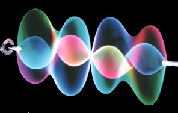

In 1983, at London's ICA, I exhibited the first sculptures to use chromastrobic light, a discovery I had made the previous year. Chromastrobic light changes color faster than the eye can see, causing the appearance of rapidly moving forms to mutate in the most remarkable ways.

In this pair of illustrations you see maquettes made with black and white designs which change to bright colors when spinning in chromastrobic light.
 More recently I have concentrated on LIGHT SCULPTURE. In 1990, I attended Art
Transition '90 at the MIT Institute of Advanced Visual Studies and made the
first presentation of new kinetic sculptures which allowed beams of chromastrobic
light to play on strands of spinning string, their motion sensitive to the laws
of chaos. These sculptures have a startling beauty as they create delicate,
changing, three dimensional patterns of light which float in the air. An inspiration
to enquiring minds, a scientific puzzle. How do these complex forms arise from
something so simple?
More recently I have concentrated on LIGHT SCULPTURE. In 1990, I attended Art
Transition '90 at the MIT Institute of Advanced Visual Studies and made the
first presentation of new kinetic sculptures which allowed beams of chromastrobic
light to play on strands of spinning string, their motion sensitive to the laws
of chaos. These sculptures have a startling beauty as they create delicate,
changing, three dimensional patterns of light which float in the air. An inspiration
to enquiring minds, a scientific puzzle. How do these complex forms arise from
something so simple?
I founded the Earth Signals group of artists. We exhibited together presenting work on the theme of Chaos. This exhibition was well received, with reviews in magazines and papers and my appearance on The Late Show. My work is gradually becoming known internationally. In 1991, a mass produced item was launched based on my light sculptures. Named String Ray, 30,000 were sold in USA.

| In the film strip you see 8 frames taken from the animation. There are big jumps in the shapes of the dancing string from frame to frame. When you see this in real life, the eye can see far more of these subtle changes than can be caught by the camcorder. On the right you see a stable form. Sometimes harmony takes over from chaos to produce a 'visual chord'. |  |